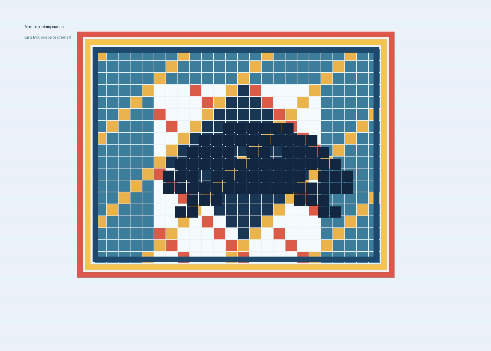

Il lavoro riprende il principio della tessera: piccoli elementi regolari vengono accostati per costruire una figura riconoscibile e una superficie cromatica compatta.
Classi seconde • mosaico contemporaneo • lavoro 2026
Mosaico con carta EVA e pixel art
Un laboratorio del 2026 per le classi seconde, dedicato al mosaico contemporaneo e alla logica dell’immagine pixelata. Gli studenti progettano un soggetto su griglia e lo traducono in tessere di carta EVA, collegando la tecnica del mosaico alla street art e alle opere urbane ispirate a Space Invader.

Presentazione dell’attività
Dal mosaico antico all’immagine digitale
Il percorso mette in relazione la tecnica del mosaico con il linguaggio della pixel art. La tessera diventa un modulo visivo, come il pixel nell’immagine digitale: attraverso la griglia, forme e colori vengono semplificati e ricostruiti in modo ordinato.
Apri la presentazione su Canva ↗Riferimento contemporaneo
Invader, Space Invader e la città come superficie
La griglia aiuta a semplificare l’immagine e a ragionare per unità minime: ogni quadrato di carta EVA funziona come un pixel materiale.
Il riferimento a Invader permette di collegare il mosaico alla cultura visiva contemporanea, alla città e ai linguaggi nati dall’immaginario dei videogiochi.
Fasi del lavoro
Progetto, griglia e composizione
Si parte da una griglia: il soggetto viene semplificato, ingrandito e trasformato in una struttura composta da quadrati.
La carta EVA viene tagliata in moduli regolari e accostata per costruire campiture, contorni, pieni e vuoti.
Le tessere vengono incollate con ordine, controllando ritmo, contrasto cromatico e leggibilità dell’immagine finale.
Elaborati degli studenti
Galleria in preparazione
Spazio predisposto per 9 lavori. Le immagini verranno aggiunte dopo la selezione e il controllo dei file.
01
Foto da aggiungere
02
Foto da aggiungere
03
Foto da aggiungere
04
Foto da aggiungere
05
Foto da aggiungere
06
Foto da aggiungere
07
Foto da aggiungere
08
Foto da aggiungere
09
Foto da aggiungere
Prima della pubblicazione verranno esclusi o corretti eventuali nomi di studenti presenti nei file, nelle immagini, nelle didascalie o nei metadati.